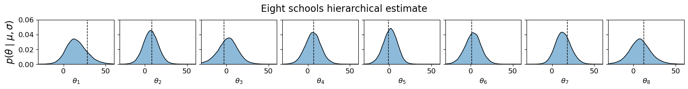
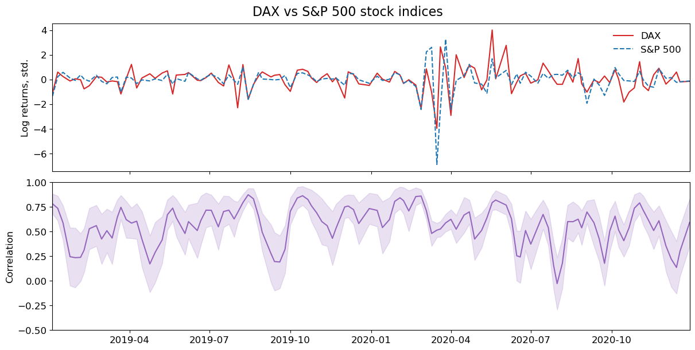

Bamojax#
Bamojax is the Bayesian modelling in JAX toolkit developed by our group. It provides an interface between Bayesian computational modelling and fast inference using the Blackjax software. In bamojax, you can specify your Bayesian model and chose an inference approach. If needed, bamojax automatically derives conditional densities to enable Gibbs sampling.
Example 1: Eight schools#
Here is a simple example of how to use bamojax for the famous eight-schools dataset. We use the following hierarchical model:
Here’s how we set this up in bamojax:
means = jnp.array([28, 8, -3, 7, -1, 1, 18, 12])
stddevs = jnp.array([15, 10, 16, 11, 9, 11, 10, 18])
J = len(means)
ES = Model('eight schools')
mu = ES.add_node('mu', distribution=dx.Normal(loc=0, scale=10))
tau = ES.add_node('tau', distribution=dx.Transformed(dx.Normal(loc=5, scale=1), tfb.Exp()))
theta = ES.add_node('theta', distribution=dx.Normal, parents=dict(loc=mu, scale=tau), shape=(J, ))
y = ES.add_node('y', distribution=dx.Normal, parents=dict(loc=theta, scale=stddevs), observations=means)
After defining the model, we can approximate the posterior, for example by using Blackjax’ Sequential Monte Carlo with Gibbs mutations:
gibbs_params = dict(mu=dict(sigma=6.0),
tau=dict(sigma=6.0),
theta=dict(sigma=5.0*jnp.eye(J)))
step_fns = dict(mu=normal_random_walk, tau=normal_random_walk, theta=normal_random_walk)
gibbs_kernel = gibbs_sampler(ES, step_fns=step_fns, step_fn_params=gibbs_params)
num_particles = 10_000
num_mutations = 100
num_chains = 4
engine = SMCInference(model=ES, num_chains=num_chains, mcmc_kernel=gibbs_kernel, num_particles=num_particles, num_mutations=num_mutations)
result = engine.run(jrnd.PRNGKey(0))

Example 2: Generalized Wishart processes#
A much more complicated model is the Generalized Wishart Process (GWP). It is a Bayesian nonparametric model for estimating dynamic covariance between a set of variables. Here is the model:
where \(n=1, \ldots, N\), with \(N\) the total number of observations, \(\nu \geq D\) the degrees-of-freedom of the Wishart distribution, \(M = D(D+1)/2\), and lastly \(\kappa_\theta\) the GP covariance function with parameters \(\theta\).
Below, we use bamojax to set up the GWP, but first we download some stock exchange data to demonstrate the model on:
print('Download timeseries')
data = yf.download('^GDAXI ^GSPC', start='2019-01-01', end='2020-12-31', interval='1d')
close = data["Close"]
returns = np.log(close).diff().dropna()
signal = jnp.asarray(returns.iloc[0:-1:4, :])
Y = signal / jnp.std(signal, axis=0) # convert to z-score
time = returns.index[0:-1:4]
time_in_days = jnp.array((time - time[0]).days)[:, jnp.newaxis]
n, d = Y.shape
nu = d + 1
m = int(d*(d+1)/2)
x = jnp.linspace(0, 1, n)[:, jnp.newaxis]
print(f'Number of observations: {n}, number of variables: {d}')
Number of observations: 118, number of variables: 2
Defining a complicated model such as the GWP is straightforward with bamojax, but it requires a link function in which multiple vectors are combined into a larger array. We first define these helper functions:
def wishart_transformation(F: Array, L: Array = None, L_vec = None) -> Array:
r""" Transformes an array of (d, nu, n) Gaussian process draws into an array of (n, d, d) Wishart-distributed covariance matrices.
Formally, we have
\Sigma(t) = \sum_{j=1}^\nu L F(t)_j F(t)^T_j L^T.
It follows from the construction (with GP output variance 1.0) that \Sigma(t) ~ W_d(V, nu), with V the Wishart location and nu its degrees of freedom.
Args:
F: An array of size (d, nu, n), with d the number of variables, nu>d the degrees-of-freedom and n the number of timepoints. F[i,j,:] ~ GP(mean, cov_fn)
L: The Cholesky decomposition of the Wishart location matrix V
L_vec: The transformed matrix vec(L) for easier sampling.
Returns:
LFFL: An array of size (n, d, d)
"""
def vec2tril(v):
L_sample = jnp.zeros((d, d))
tril_indices = jnp.tril_indices(d, 0)
return L_sample.at[tril_indices].set(v)
#
d = F.shape[0]
F = jnp.transpose(F, axes=[2, 1, 0])
FF = jax.vmap(lambda x: x.T @ x, in_axes=0)(F)
if L is None and L_vec is not None:
L = vec2tril(L_vec)
def transform_single(FF_i):
return L @ FF_i @ L.T
#
LFFL = jax.vmap(transform_single, in_axes=0)(FF)
return LFFL
#
def wishart_link_fn(F: Array, shape: tuple, L: Array = None, L_vec: Array = None) -> dict:
r""" Transform the (F, L) or (F, vec(L)) representation of the Wishart process into a set of parameters for dx.MultivariateNormalFullCovariance ('loc and covariance_matrix')
Args:
F: The (d, nu) draws of a GP, f ~ GP(., .). If the collected f's are flattened, they are reshaped here.
L / vec(L): The scale matrix of the Wishart distribution.
Returns:
A dictionary containing the arguments for a distrax MultivariateNormalFullCovariance distribution object.
"""
if jnp.ndim(F) < 3:
F = jnp.reshape(F, shape=shape)
d = shape[0]
LFFL = wishart_transformation(F=F, L=L, L_vec=L_vec)
return dict(loc=jnp.zeros((d, )), covariance_matrix=LFFL)
#
partial_wishart_link_fn = lambda F, L_vec: wishart_link_fn(F=F, L_vec=L_vec, shape=(d, nu, n))
The next step is to define the Bayesian model:
GWP = Model('Generalized Wishart process')
lengthscale = GWP.add_node(name='lengthscale', distribution=dx.Transformed(dx.Normal(loc=3.0, scale=0.5), tfb.Exp()))
x_node = GWP.add_node(name='input', observations=time_in_days)
F = GWP.add_node(name='F', distribution=GaussianProcessFactory(mean_fn=Zero(), cov_fn=jk.RBF()),
parents=dict(input=x_node,
lengthscale=lengthscale,
variance=1.0), shape=(d, nu))
Lvec = GWP.add_node(name='L_vec', distribution=dx.Normal(loc=jnp.zeros((m, )), scale=jnp.ones((m, ))))
y_node = GWP.add_node(name='Y', distribution=dx.MultivariateNormalFullCovariance, parents=dict(F=F, L_vec=Lvec), link_fn=partial_wishart_link_fn, observations=Y)
And finally we can set up the inference. We have shown that Sequential Monte Carlo works well for this purpose. Wishart processes contain latent Gaussian variables, which we can effectively sample using elliptical slice sampling within our Gibbs mutations.
step_fns = dict(lengthscale=normal_random_walk,
L_vec=normal_random_walk,
F=elliptical_slice_nd)
step_fn_params = dict(lengthscale=dict(sigma=3.0),
L_vec=dict(sigma=0.1*jnp.eye(m)),
F=dict(implied_mvn_prior=True, name='elliptical_slice_nd', nd=(d, nu)))
gibbs_kernel = gibbs_sampler(GWP, step_fns=step_fns, step_fn_params=step_fn_params)
num_particles = 1_000
num_mutations = 400
engine = SMCInference(model=GWP, mcmc_kernel=gibbs_kernel, num_particles=num_particles, num_mutations=num_mutations, return_diagnostics=False)
result = engine.run(jrnd.PRNGKey(1337))
final_state = result['final_state']

More examples of bamojax are available at UncertaintyInComplexSystems/bamojax!